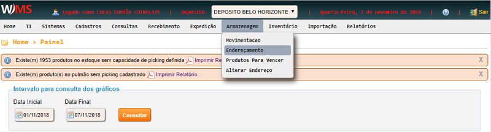
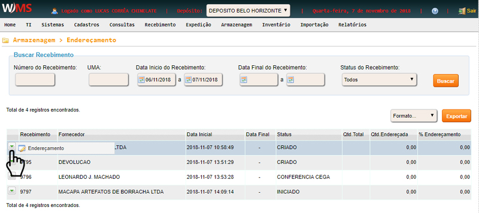
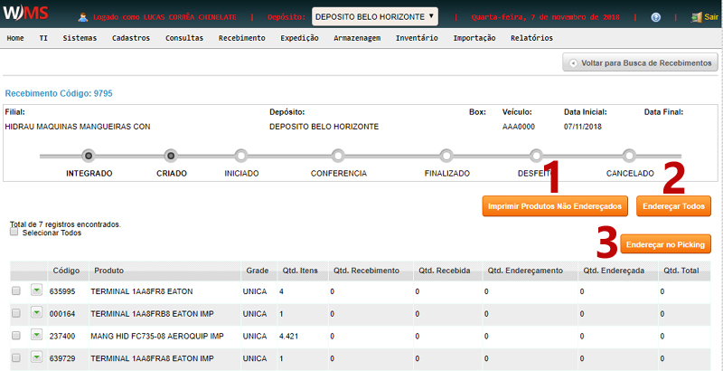
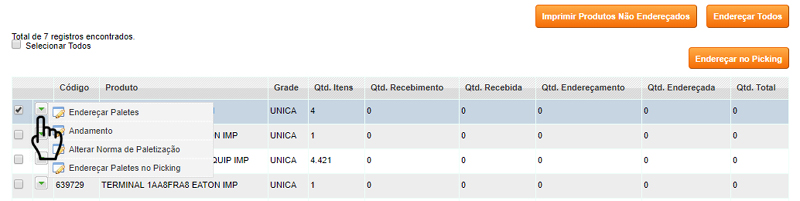

Armazenagem -> Endereçamento
Clique no menu ARMAZENAGEM, em seguida clique em ENDEREÇAMENTO.

Posicione o mouse no início da linha desejada e clique em ENDEREÇAMENTO

Na tela seguinte, você tem os botões que fazem ações em grupo, ou seja, ações sobre todos os registros listados.
- Imprimir produtos não endereçados: gera um relatório PDF com os produtos não endereçados.
- Endereçar todos: endereça todos os produtos.
- Endereçar no picking: endereça todos os produtos nos respectivos pickings, caso não
tenha disponibilidade ou não seja suficiente, os produtos são endereçados no pulmão.

Ao posicionar o mouse no início da linha de um registro, você tem acesso às seguintes funcionalidades:
- Endereçar paletes: endereça o produto em um endereço selecionado.
- Andamento: verifica o andamento do endereçamento.
- Alterar norma de paletização: altera a norma de paletização de um produto
- Alterar paletes no picking: endereça o produto diretamente no picking, desde que haja
disponibilidade.
